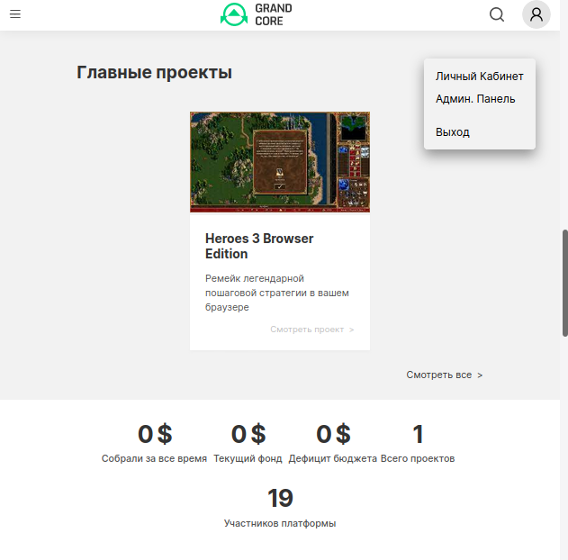
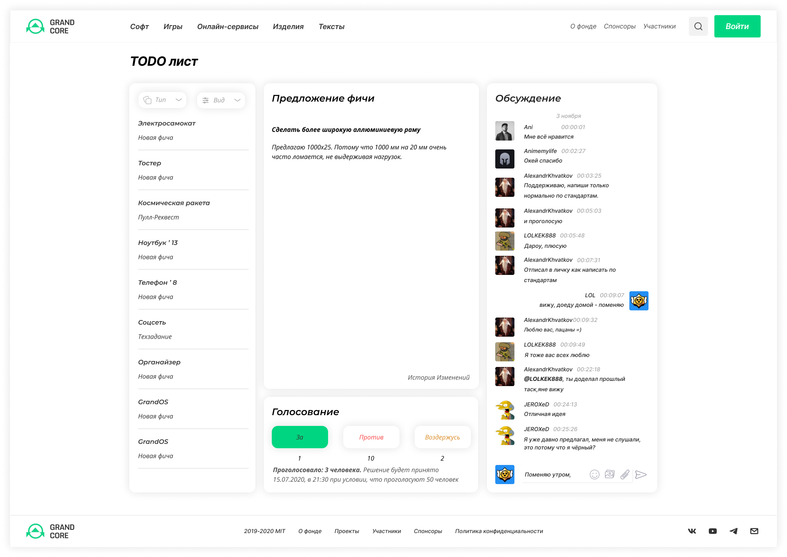

Привет, как дела? Мы GrandCore Foundation, первая в мире Open Source корпорация. Наша цель — создать идеальную экосистему для работы над проектами под свободной лицензией, со всеми необходимыми для этого инструментами. Ищем Сооснователей!
В рамках фонда ведётся разработка и поддержка свободного ПО и игр, этичных альтернатив онлайн-сервисов, открытых стандартов изделий (от тостера до космической ракеты), проводятся исследования, идёт коллективная работа над статьями и книгами.
Все проекты становятся общественным достоянием. Решения принимаются участниками фонда. Вес голоса пропорционален материальному и финансовому вкладу в проекты. Любое решение может быть заблокировано верховным советом в который входят Сооснователи и самые активные участники. Каждый член верховного совета имеет равный голос.
Работы ведутся в рамках специфичных для каждой задачи бизнес-процессов. При этом, их интерфейс условно можно разделить на 3 блока. В рабочем блоке формируются предложения для голосования или, например, предлагаются пулл-реквесты. Блок голосования позволяет отвергнуть или принять предложения, после чего выполнить соответствующие инструкции. Кроме того, пользователи могут обсуждать предложения в третьем блоке.
Во время обсуждения, участник выдвинувший предложение, кураторы проекта и члены верховного совета могут производить изменения в рабочем блоке, опираясь на обратную связь, а так же отменить предложение. У каждого пользователя есть свой TODO лист, где отображаются все требующие его внимания процессы проектов на которые он подписан.
Любой участник может предложить свой проект фонду. В отличие от GitHub и Kickstarter сообщество голосует за целесообразность добавления проекта в каталог, блокируя неинтересные проекты и проекты, которые дублируют уже существующие. Принятому проекту выбираются кураторы, на основе принятых сообществом соглашений выбирается стек.
Работа над проектами ведётся по принципу конвейера. После завершения этапа, результат используется как отправная точка для следующего этапа. На первом этапе участники предлагают идею для новой фичи или фиксируют найденный баг. Любое предложение проходит этап голосования и в случае принятия, оно попадает в банк идей. На основе предложений пишутся техзадания для новых релизов. Разработчики предлагают свои кандидатуры для выполнения задач по текущим техзаданиям, указывая сроки и желаемый гонорар. В выделенное время сообщество контролирует ход разработки выбранного кандидата. Его работа может быть остановлена, в случае, если исполнитель будет работать некачественно.
Сообщество каждого проекта имеет всю необходимую инфраструктуру. Участники смогут оказывать услуги по внедрению и доработке проектов фонда под нужды пользователей на коммерческой основе, продавать сделанные по стандартам изделия, их составные узлы и детали, работать над документацией и обучающими материалами, задавать вопросвы и отвечать на них.